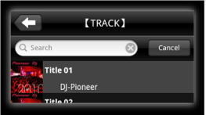

音乐管理
浏览音乐文件
可使用曲目信息（如类别属性等）浏览和选择音乐文件。
浏览器面板上若未显示任何曲目或类别，首先对音乐文件进行分析并将它们添加到rekordbox（iOS/Android）库。

2轻触想要浏览的类别。
将显示所选类别的下一级。
 还可在浏览面板中添加要显示的类别。
还可在浏览面板中添加要显示的类别。 - 对于【TRACK】、 【ALBUM】和【ARTIST】类别，当触摸浏览面板右边的索引条时，列表会滚动到所选字母开始的行。
3选择曲目并轻触。

搜索曲目
可通过输入字符串搜索rekordbox（iOS/Android）库中的曲目。
1当在浏览面板上向下滑动并返回到列表开始时，会在列表的顶部显示搜索框。
- 在Android设备如果这样操作后未显示搜索框，请按Android设备的菜单按钮，然后触摸[搜索]。

2轻触搜索框并输入想要搜索的字符串。
将显示您输入的艺术家、 唱片集和曲目（包括字符串）。
删除曲目
将从rekordbox（iOS/Android）库中删除曲目。
1当长按要删除的曲目时，会打开动作表。
2轻触[从rekordbox移除]以从曲库中删除曲目。
 删除唱片集和艺术家
删除唱片集和艺术家
按住唱片集或艺术家然后轻触[从rekordbox移除]时，该唱片集或艺术家类别中包含的所有曲目均会从rekordbox（iOS/Android）库中删除。
编辑曲目信息
1当长按要编辑信息的曲目时，会打开动作表。
2轻触[信息]时，将显示曲目信息。
可以编辑的项目
额定值、 颜色和备注
- 在rekordbox（iOS/Android）中编辑的曲目信息会反映在计算机上的rekordbox（Mac/Windows）库中。
重新分析音乐文件
1当长按要重新分析的曲目时，会打开动作表。
2轻触[分析音轨]以开始分析音乐文件。
一旦音乐文件分析完成，BPM和拍子网格将被新分析的结果覆盖。